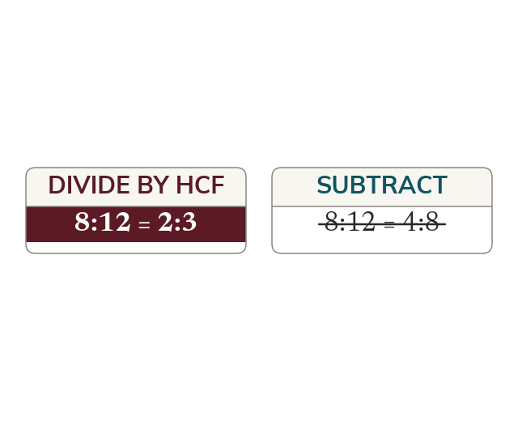

Divide to simplify, never subtract
A ratio compares parts by multiplication, so divide both parts to simplify. Dividing by the highest common factor gives the simplest form in one step.
A ratio records how many of one quantity go with how many of another, so what matters is the multiplicative relationship between the parts and not the size of the numbers used to write it. Dividing both parts by the same number leaves that relationship untouched, exactly as it does in an equivalent fraction, which is why dividing by the highest common factor gives the simplest form in one step. Subtracting the same amount from both parts does not leave the relationship untouched: it changes the ratio into a different one that happens to share a difference. The test of a correct simplification is that the two ratios describe the same mixture.